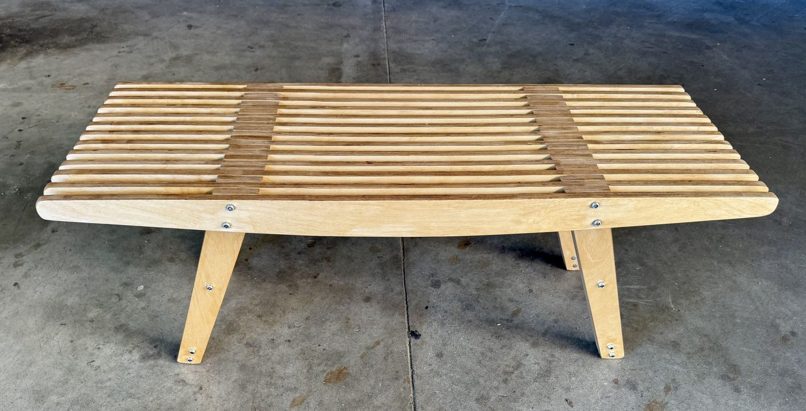

Subhadeep Sarker
[shu-bho-deep]
email
·
linkedin
onnbon
drink fresh tea
plum
cha
neighbors · share · collaborate
quiet hours, booked

Slat bench
, 2025
Baltic birch plywood, galvanized steel hardware
18 × 48 × 18 in.